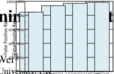
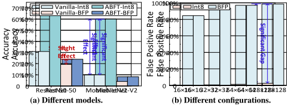
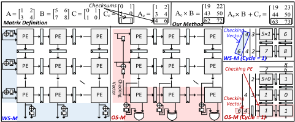
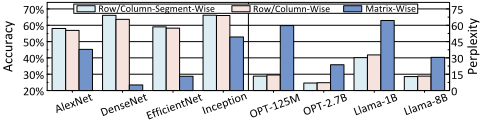

From Characterization to Microarchitecture: Designing an Elegant and Reliable BFP-Based NPU
从特征化到微架构：设计优雅且可靠的基于 BFP 的 NPU
简介
该论文针对 Block Floating-Point（BFP）数据格式在边缘 NPU 中日益普及、但其在硬件故障下的失效行为与安全关键部署适用性缺乏研究的问题，开展了首个 BFP-based NPU 的深入实证可靠性研究。作者在 RTL 级对 SRAM 读写锁存器与流水线边界寄存器注入 permanent/transient 故障，发现 shared-exponent 会放大相关性错误、高位 mantissa 因 leading-zero 归一化而高度敏感，且传统 ABFT 端到端检查在 BFP 非线性块缩放下误报率飙升而失效。据此提出 row/column-wise blocking 策略，将定点 mantissa 阵列与标量 exponent 路径解耦，分别部署轻量 ABFT 检查器、利用时序余量的 recompute-and-compare 时间冗余，以及对仅占 0.2% 面积的格式转换单元施加 DMR。基于 Gemmini 在 FPGA 与 TSMC 28nm 上的评估显示：以 3.55% 几何平均性能开销、约 1.3%~1.8% 面积开销达到接近 DMR 的保护效果，检测覆盖率 ≥98%，检测延迟亚微秒级，并明确对齐 ISO 26262 对故障检测的要求。
问题
BFP 已被 NVIDIA Blackwell、AMD Strix Point、Tenstorrent 等产品采用，但其在硬件故障下的行为与面向安全关键场景（自动驾驶、工业控制）的适用性未被研究；传统保护方案（ABFT、DMR/IR、ECC）假设线性误差累积，在 BFP 的 shared-exponent 非线性块缩放与归一化下失效，需要回答'在哪里保护（where to protect）'与'如何保护（how to protect）'两个问题，并在面积/延迟/能耗预算内平衡保护覆盖率与开销。
方法
在 RTL 级用 2:1 MUX 'saboteur' 对 SRAM 读写锁存器和流水线边界寄存器注入 stuck-at 与单周期 bit-flip 故障，以 fault rate 参数化注入强度，完成 bit/path 级脆弱性特征化；基于'exponent 路径短且有时序余量、mantissa 全程保持定点域'的观察，提出 row/column-wise blocking 策略，将 BFP 计算解耦为映射到定点 systolic array 的 mantissa MAC 与少量加法器构成的标量 exponent 路径，并按模块差异化部署保护：mantissa 路径用硬件 ABFT checksum 在流检查（仅增加 2 个周期），exponent 路径利用流水线空闲周期做两次求值比较的时间冗余检测（寄存器重构成环以避免 permanent fault 被掩蔽），FP↔BFP 转换器因仅占 0.2% 面积直接采用带位一致性检查的 DMR。
关键结果
性能开销：所提方案几何平均仅 3.55%，远低于 DMR（20%~132%）与 IR（10%~70%）（iso-area 公平对比）
硬件开销（128×128 配置，Synopsys Design Compiler v2019.12 + TSMC 28nm 库）：面积 WS 1.30% / OS 1.80%，功耗 WS 2.81% / OS 3.05%
检测覆盖率：所有配置与故障率条件下均保持 98% 以上，仅极端故障率下略有下降
最坏情况检测延迟：所有模块均低于 1 微秒（sub-microsecond），转换器延迟几乎不随配置变化
故障率低于 10^-9 时模型保持基线性能，超过 10^-8 后所有受测 LLM 完全失效；fault rate 5×10^-8 下传统 ABFT 在 BFP 上误报率飙升而失效
blocking 策略对比：row/column-segment-wise 仅带来约 2% 推理收益，却使检测逻辑开销从矩阵粒度的 ≈1/128 升至 ≈1/4
实验平台：Gemmini 开源 NPU，20 片 AMD Virtex UltraScale+ VU19P FPGA，16×16/64×64/128×128 阵列；LLM 评估用基于 Spike 的 PyTorch 行为模型
创新点
首个针对 BFP-based NPU 的深入实证可靠性研究；揭示了传统 ABFT 等端到端保护在 BFP shared-exponent 非线性块缩放下失效的机理（误报率飙升），并提出将 BFP 计算语义与可靠性约束协同设计（blocking 策略、硬件映射与按模块差异化的轻量保护机制）的路线，而非直接移植 FP/INT 格式的既有保护方案。
团队参考意义
相关度级别：high
命中能力域：2.5 功能安全与安全机制 | 2.6 Fault simulation/Z01X/TFMEA
理由：论文核心工作与团队 2.5/2.6 域直接对应：明确引用 ISO 26262 的故障检测要求，设计并验证安全机制（ABFT、时间冗余 recompute-and-compare、小面积关键模块 DMR），量化 diagnostic coverage（≥98%）与检测延迟（亚微秒，对应 FTTI 约束），并采用 RTL 级 fault injection + fault rate 参数化做 failure mode 特征化与 detectability 分析——这正是团队 TFMEA/FMEDA 论证与 safety verification 所需的方法链。虽然对象是 NPU 计算 datapath 而非团队的 LPDDR/HBM4/UCie 存储互连 IP，systolic array ABFT 等具体机制不能直接移植，但'先故障注入特征化、按脆弱性分级、再部署轻量检测并量化 DC/延迟/误报'的方法论与证据生成方式对团队 IP 的安全机制设计与论证有直接借鉴价值。
建议动作：深入精读并做内部分享
中文全文
arXiv:2604.10494v1 [cs.AR] 2026年4月12日
From Characterization to Microarchitecture: Designing an Elegant and Reliable BFP-Based NPU False Positive Rate 40% 60% 80% False Positive Rate 40% 60% 80%
Jie Zhang † 1、Jiapeng Guan § 1、Hao Zhou §、Xiaomeng Han †、Tinglue Wang †、Ran Wei ¶ 和 Zhe Jiang †∗ † 东南大学，中国 § 大连理工大学，中国 ¶ 兰卡斯特大学，英国 0 20% 16×16 32×32 64×64 128×128 0 20% 16×16 32×32 64×64 128×128
Abstract
块浮点（BFP）正在成为边缘神经网络处理器（NPU）颇具吸引力的一种数据格式，兼具宽动态范围与高硬件效率。然而，其在硬件故障下的行为以及对安全关键部署的适用性仍未得到充分探索。本文首次对基于 BFP 的 NPU 开展了深入的实证可靠性研究。通过对 NPU 进行 RTL 级故障注入，我们的位级与路径级分析揭示了显著的异构脆弱性，并表明传统的端到端校验在非线性块缩放下会变得失效。在这些发现的指导下，我们设计了一种容错的基于 BFP 的 NPU 微体系结构，使 BFP 计算语义与可靠性约束相一致。该设计采用按行/列分块策略，将定点尾数计算与标量指数路径解耦，并为二者分别引入超轻量级保护机制。实验结果表明，我们的设计仅以 3.55% 的几何平均性能开销和低于 2% 的硬件成本，实现了接近双模块冗余的可靠性。
1 Introduction
块浮点（Block Floating-Point，BFP）[10, 64, 68] 是一种新兴的数据格式，正在现代边缘神经处理单元（Neural Processing Unit，NPU）[11, 23, 24] 中日益受到关注。在 BFP 中，一组元素构成的“块”共享同一个公共指数，而每个元素保留各自的尾数。通过将块内的指数对齐，对尾数的算术运算可以完全由整数单元执行，每个块只需进行一次指数调整。这简化了乘累加（Multiply-and-Accumulate，MAC）数据通路和浮点（Floating-Point，FP）流水线的复杂度，与 IEEE-754 FP 格式相比提升了计算吞吐量和能效，因此已被众多工业产品广泛采用，例如 NVIDIA 的 Blackwell GPU [44]、AMD 的 Strix Point NPU [3] 以及 Tenstorrent 的 AI 加速器 [8]。
尽管性能提升推动了 BFP 的广泛采用，可靠性对边缘 NPU 而言同样至关重要，尤其是部署在安全关键场景中的 NPU，例如自动驾驶 [16, 40]、工业控制 [55, 59] 等。这意味着 NPU 必须能够抵御硬件故障，并能在通常以毫秒计的狭窄故障容忍时间间隔（Fault Tolerant Time Interval，FTTI）内检测出错误，防止其升级为危害。
已有工作。先前的工作已针对采用传统数据格式的边缘 NPU 探索了多种容错技术，例如 INT8/16 [33, 48]、FP16 [15, 42]、BF16 [15, 35]。这些工作通常从离线可靠性分析入手（例如故障注入或解析建模 [15, 47, 48]），以识别脆弱的位、模块或流水线级。在此基础上，再开发并部署针对性的安全机制 [1, 6, 45]。
1 两位作者贡献相同。
∗ 通讯作者：Zhe Jiang。Email：zhejiang.uk@gmail.com。


例如，使用基于算法的容错（Algorithm-Based Fault Tolerance，ABFT）[2, 43, 52] 保护脉动阵列，采用冗余（例如硬件双模块冗余（Dual-Module Redundancy，DMR）[5, 54]，或软件指令冗余（Instruction Redundancy，IR）[29, 30, 60]），以及利用纠错码（ECC）或奇偶校验保护寄存器或存储单元 [39, 46]。尽管这些工作研究的数据格式各不相同，但其底层的 NPU 微体系结构和计算流程仍然相似。因此，它们的保护方案可以轻松适配到采用不同数据格式的 NPU 上。
挑战。与传统格式不同，BFP 重新定义了数据表示和计算流程，带来了现有保护方案无法覆盖的全新可靠性问题：
在哪里保护：BFP 的共享指数将各元素耦合在一起，这意味着单个指数位的位翻转就会扭曲整个数据块，并传播被放大的相关误差。相反，在 BFP 块中提取最大共享指数，使得尾数相比传统浮点（FP）格式承载更大的数值权重，这可能导致尾数前导位的翻转主导整个数据块的数值贡献。在位、块、张量、层等各个层级上定量刻画这些误差动态并非易事：粗糙的模型会遗漏主导性故障，而细粒度分析的复杂度又会爆炸式增长。
如何保护：BFP 将指数与尾数处理解耦，这要求重新思考容错机制的部署方式。如图 1 所示，传统的矩阵级方案（例如 ABFT）假设误差线性累积，而这一假设在 BFP 的非线性块缩放和共享指数归一化下会失效。挑战在于设计一种 BFP 感知的保护机制，使其既能保持 BFP 的计算效率，又能有选择地保护对误差最敏感的组件，并在 NPU 严格的面积、延迟和能耗预算内运行。在保护覆盖率与性能开销之间取得这种平衡，是实现可靠的基于 BFP 的 NPU 的一个关键开放问题。
贡献。我们通过对基于 BFP 的 NPU 开展首个深入可靠性研究来应对这些挑战。利用寄存器传输级（RTL）故障注入，我们在代表性模型上刻画了跨模块、跨故障强度的故障模式与容忍阈值，揭示了关键的位级/路径级脆弱性：共享指数会放大相关误差，而高阶尾数位则因
Conference'17, Washington, DC, USA 2026. ACM ISBN 978-x-xxxx-xxxx-x/YYYY/MM https://doi.org/10.1145/3770743.3804101
![Figure 2. 不同条件下模型的准确率或困惑度，以及 BFP 与 FP 之间指数误差影响的比较。DNN [26, 27, 36, 38, 53, 57, 58] 在 DBPedia-14 [49]（BERT）和 Tiny ImageNet [63]（其他模型）上评估，LLM [12, 65] 在 WikiText-2 [41] 上评估。](assets/p026/figures/fig_3.png)
前导零驱动的归一化而较为敏感。在这些观察的指导下，我们提出一种符合 BFP 语义、面向流水线的可靠性原则，以及一种按行/列的硬件映射方式，将计算解耦为定点尾数阵列和一条较短的标量指数流水线；我们利用指数路径的时间裕量实现低开销的重算-比较（recompute-and-compare），执行定点局部一致性检查，并对紧凑的格式转换单元进行加固。评估结果表明，我们的设计实现了接近双模块冗余（DMR）的鲁棒性，平均性能开销仅为 3.55%（相比之下，DMR 为 20% 至 132%，IR 为 10% 至 70%），面积开销为 1.3%，功耗开销为 2.81%，检测覆盖率 ≥ 98%，延迟为亚微秒级。
2 Preliminary: the Mechanics of BFP
块浮点（BFP）是一种高效的数据格式，旨在平衡宽动态范围与定点数的硬件效率。对于一个由 𝑁 个数组成的块 𝑋 = { 𝑥 0 , 𝑥 1 , . . . , 𝑥 𝑁 - 1 } ，每个元素定义为：
BFP 格式通过共享一个公共指数 𝑒 𝑠ℎ 来表示该数据块。该共享指数（shared-exponent）通常选取为块内所有指数中的最大值，即 𝑒 𝑠ℎ = max0 ≤ 𝑖 ≤ 𝑁 - 1( 𝑒 𝑖 ) 。转换之后，该数据块可以表示为：
其中，𝑚 ′ 𝑖 为对齐后的尾数，通过将原始尾数 𝑚 𝑖 右移 ( 𝑒 𝑠ℎ - 𝑒 𝑖 ) 位得到。
两个 BFP 格式的 𝑁 维向量 𝐴 和 𝐵 ，其共享指数分别为 𝑒 𝐴 和 𝑒 𝐵 ，二者的点积计算如下：
如式 (3) 所示，BFP 将点积分解为共享指数加法 ( 𝑒 𝐴 + 𝑒 𝐵 ) 和定点尾数点积。与传统浮点（FP）中这种分离仅局限于操作级不同，BFP 将其提升到了宏观的块级。
3 Observations: BFP Resilience Characterization
3.1 Analysis of BFP-Based Machine Learning Workloads
Using the aforementioned fault-injection, we evaluate representative DNNs and LLMs under NPU fault injection. As shown in Fig. 2(a) and 2(b), the models maintain baseline performance at sufficiently low fault rates (e.g., below 10 - 9 ); however, as the fault rate increases, DNNs accuracy degrades progressively while LLMs perplexity rises sharply, and when the fault rate exceeds 10 - 8 all tested LLMs fail completely. Although BFP can reduce hardware complexity, it does not provide inherent improvements in fault resilience - once the fault rate surpasses the model's tolerance threshold, performance deteriorates rapidly. This observation is consistent with prior findings on conventional FP models [4, 7]. Given that silent-fault rates in modern compute-intensive devices routinely exceed 10 - 7 [19], such intrinsic tolerance is clearly insufficient to ensure accurate operation. Insight-1 : BFP-based NPUs require reliability provisioning, as BFP offers no intrinsic resilience and models can catastrophically We inject faults into distinct BFP-based NPU microarchitectural modules to analyze vulnerability. Compute and non-compute modules play fundamentally different roles in the dataflow: compute groups (e.g., MAC/ALU pipelines) perform arithmetic, where transient faults quickly amplify via accumulation, whereas non-compute groups (e.g., on-chip memories, buffers) store and transport data, so faults tend to persist and be repeatedly reused. These differences create distinct failure modes and naturally call for different protection mechanisms. Thus, we separate the analysis into compute and non-compute groups and evaluate them independently, yielding a reliability-oriented abstraction that captures dominant vulnerabilities while avoiding a module-by-module dimensional explosion.
From Characterization to Microarchitecture: Designing an Elegant and Reliable BFP-Based NPU

Non-compute modules. In non-compute modules at a high fault rate of 10 - 7 (Fig. 2(c)), BFP mantissas rarely cause inference failure, whereas exponent bit upsets are the primary drivers of performance degradation, consistent with observations on conventional FP formats [13, 40]. The rationale is that mantissa perturbations in noncompute units typically manifest as bounded magnitude shifts, while exponent errors rescale values by 2 𝑛 , producing extreme values.
计算模块。图 2(d) 表明，由于共享指数设计，BFP 指数故障造成的偏差远大于 FP：单次扰动会统一地重新缩放块内所有元素，相干地偏置所有部分积，使累加运算放大误差，从而产生突发的结果尖峰、IEEE-754 异常（Inf/NaN）以及推理失败。对于尾数故障，我们在 5 × 10 - 7 的故障率下分析了尾数路径上中间结果寄存器的敏感性。在 FP 和 BFP 中，该寄存器的位宽均被扩展至 22 位，我们将其划分为四个连续的有效位段：Q1（最低有效的 6 位）、Q2（其次的 6 位）、Q3（再次的 5 位）和 Q4（最高有效的 5 位）。图 2(e) 和图 2(f) 表明，BFP 尾数故障对性能的劣化远大于 FP，其中以最高有效位段 Q4 中的错误为主。
BFP 与 FP 之间的差异源于二者截然不同的计算路径。BFP 遵循第 2 节中的计算模型，在块计算之后通过单次归一化来恢复最终的指数和尾数。在计算之前，BFP 量化会对尾数进行右移，从而产生前导零偏置。基于前导零计数器（LZC）的归一化使这一模式对高阶位翻转高度敏感。如图 3 所示，翻转十个前导零中的第一个会使 LZC 从 10 骤降为 0，使指数增加 10；而 FP 的隐含前导位限制了前导零的数量，使指数漂移缩小 500 倍以上。流水线的顺序也有所不同：FP 持续进行尾数对齐与归一化，而 BFP 先执行块级尾数计算，然后再施加一次统一的归一化。因此，在 BFP 中，归一化会使尾数误差扰动输出指数，从而导致“仅保护指数路径即可”的假设。同样需要对尾数计算路径进行针对性加固。Insight-2：BFP 在不同模块中的位级脆弱性要求采用差异化的加固优先级。在非计算模块中，应优先保护指数位。在计算模块中，应优先保护共享指数路径以及执行单元内经位宽扩展的尾数的高有效位段。

3.3 Analysis of BFP Stream Processing in BFP-Based NPUs
In typical BFP-based NPU datapath [11, 14, 22, 66], compute modules are flanked by FP-BFP converters. This common industrial design confines BFP to inner MACs for efficiency, retaining FP at boundaries for high-accuracy nonlinearities (e.g., softmax) and compatibility with existing FP software stacks. The pipeline is naturally segmented by these BFP-introduced stages, forming structural boundaries that later serve as anchor points for reliability mechanisms.
Examining BFP's computation logic shows that, when exponents and mantissas are mapped onto decoupled hardware paths, their processing becomes highly asymmetric in structure and verification complexity. During vector computation, mantissas traverse the MAC pipeline for the dot product, while exponents require only a single scalar addition, leaving the exponent path short with substantial cycle slack. Meanwhile, mantissas stay in the fixed-point domain along the dot product datapath, enabling a lightweight fixed-point check without reconstructing FP results. By contrast, an end-to-end unified check on reconstructed FP outputs must reconcile normalization, alignment, and rounding, increasing checker overhead and false positives that reduce effectiveness (see Fig. 1). These observations suggest that aligning BFP hardware mapping with reliability constraints is key to elegant and reliable BFP-based NPUs.

Insight-3 : By aligning BFP computational semantics with reliability constraints through fine-grained hardware mapping and characteristic-aware protection, a cost-effective, reliable BFP-based NPU solution can be developed.
4 Microarchitecture
基于第 3 节的分析，我们提出一种基于块浮点（BFP）的神经网络处理器（NPU），利用 BFP 的特性以低开销实现可靠性。该设计使修改后的硬件直接对齐 BFP 计算语义，从而能够实现高效且开销极小的保护机制。从可靠性角度来看，即时故障检测对于防止系统失效至关重要 [31, 32]。这一优先级已在 ISO 26262 [32] 中被明确规定，该标准对故障检测提出了严格的、针对不同等级的要求。因此，我们的工作聚焦于开发高效的故障检测机制。一旦检测到故障，系统便可通过成熟的安全管理框架转入安全状态并执行纠正措施。
BFP 分块策略与硬件映射。借助 BFP 的特性，我们通过一种合适的分块策略来设计其硬件算子。BFP 的共享指数特性与向量点积天然契合，使其与脉动阵列相兼容。如图 4.a 所示，我们提出一种高度兼容的分块策略：左矩阵按行分块，右矩阵按列分块，每个向量被量化为一个具有共享指数的 BFP 块。由此，结果计算被等价为 BFP 行向量与列向量的点积。由于最终指数等于各向量共享指数之和，尾数乘累加（MAC）运算与指数路径完全解耦。这一关键解耦带来多项微架构优势：(i) 尾数点积任务可直接映射到标准定点脉动阵列和向量单元上，在不改变关键结构的前提下保持与传统 NPU 硬件的兼容性；(ii) 指数流水线与尾数流水线相互分离，使得能够利用二者各自不同的敏感性特性实施相互独立、有差异化的保护方案；(iii) 尾数保护简化为定点保护，避免了传统浮点（FP）路径中因舍入误差而导致的误报和漏检。此外，与尾数解耦之后，指数只需通过简单求和即可获得，仅需少量加法器。

保护理念。上述映射能够以最小的开销实现全面的可靠性。首先，尾数计算被转换为定点运算并在脉动阵列上执行。由于尾数计算对端到端推理具有显著影响，且基于算法的容错（ABFT）对定点计算不引入任何偏差，我们在硬件中部署了一个轻量级 ABFT 校验器来保护尾数路径（Fig. 4. b）。相比之下，指数计算仅使用少量加法器，且速度远快于尾数计算。利用相对于尾数流水线的时序裕量，每个加法器在空闲周期内执行两次求值并比较结果，从而提供时间冗余的故障检测（Fig. 4. c）。对于 FP-to-BFP 和 BFP-to-FP 转换器，我们的测量结果表明其面积仅占 NPU 的 0.2%。对于这类面积小且不可分割的关键模块，双模冗余（DMR）（Fig. 4. d）成为一种合理且可实现的解决方案。
4.1 Reliability of the Mantissa Compute Module
By mapping BFP mantissa computation onto the systolic array, protecting this path reduces to hardening the fixed-point systolic array. In NPUs, two common regimes are Weight-Stationary (WS-M) and Output-Stationary (OS-M): in WS-M, the weight matrix 𝐵 is preloaded into the systolic array, while the input matrix 𝐴 streams through; in OS-M, the bias matrix 𝐶 is preloaded, and both 𝐴 and 𝐵 stream in. For the fixed-point computation path, we employ ABFT for verification: by appending row/column checksums, a set of resultant checksums is generated along with the results (the upper part of Fig. 5). To keep checks 'in-flight' without disturbing the dataflow, we append a checksum vector to the tail of 𝐴 and, under OS-M, activate additional check-PEs for synchronous in-pipeline verification.
Protection mechanism. The mechanism (Fig. 5) tightly integrates with the systolic array's original dataflow. In WS-M, we place a column of adder-register units at the array ingress to integrate the streaming columns of the input matrix 𝐴 on the fly, producing a check-vector that is appended to 𝐴 and inserted in the same stream. Via systolic propagation, the checksum emerges at the array bottom, where an accumulator calculates the sum of the computed results, and a comparator checks the resultant checksums against this sum, providing in-situ result verification (Fig. 5: blue region). In OS-M, outputs accumulate inside the PEs. To support streaming verification, we add (i) a bottom row of check-PEs and (ii) a leftedge column-wise accumulation chain that cascades and integrates per-column inputs each cycle, generating the check components in place. By phase-aligning the chain depth with the array latency, these components arrive at the check-PE inputs exactly when the check-vector is inserted, the check-PEs then produce output-aligned resultant checksums and perform immediate comparison and error detection (Fig. 5: red region). The mechanism adds only two extra cycles - one to insert the check-vector and one to perform the final comparison. Additionally, informed by the Insight-2 in Sec. 3, the error correction mechanism deployed on our detection system could be designed to ignore bits that exert a negligible influence.
From Characterization to Microarchitecture: Designing an Elegant and Reliable BFP-Based NPU

4.2 Reliability of the Exponent Compute Module
The exponent compute module for BFP matrix multiplication computes the exponent component of the resultant matrix 𝐶 . The module takes two shared-exponent vectors as input: 𝐸 𝑎 ∈ Z 𝑁 × 1 for the rows of matrix 𝐴 , and 𝐸 𝑏 ∈ Z 1 × 𝑁 for the columns of matrix 𝐵 . It outputs the resultant exponent matrix 𝐸 𝑐 ∈ Z 𝑁 × 𝑁 , where 𝐸 𝑐 ( 𝑖, 𝑗 ) is the exponent for the corresponding result element 𝐶 ( 𝑖, 𝑗 ) . The computation is performed using an outer-add operation, and it is defined by: 𝐸 𝑐 = 𝐸 𝑎 1 𝑇 + 1 𝐸 𝑏 . Here, 1 is a column vector of ones of size 𝑁 × 1 . To enhance reliability and optimize resource utilization, a dedicated Exponent Unit (EU) is designed. Multiple EUs are cascaded into an EU array that exploits pipeline idle cycles from the timing mismatch between the systolic array and the adder. The array is capable of executing two aforementioned exponent computations within the time equivalent to a single computation cycle of the systolic array. Protection mechanism. Fig. 6. a shows the EU microarchitecture and its interconnection topology. Each EU comprises an adder, two exponent registers and multiplexers. In WS-M, the systolic array is preloaded with Matrix 𝐵 ; in OS-M, Matrix 𝐴 is fetched and transposed beforehand. We next detail the WS-M flow; the OS-M case is analogous to 𝐴 / 𝐵 swapped and the transpose step applied. The exponents of Matrix 𝐵 are extracted and loaded into a 𝐵 -matrix exponent register in each EU. As Matrix 𝐴 is fetched rowwise, its row exponents are streamed at one per cycle (Fig. 6. b ), broadcast to all EU adders, and latched by a serial 𝐴 -matrix exponent-register chain. To increase fault-detection coverage on the second computation and avoid masking permanent faults, the 𝐵 -matrix exponent registers are reconfigured into a ring for data circulation (Fig. 6. c ). This causes each adder to receive a different operand pairing across the two runs, reducing constant-input cases that could mask permanent faults.
4.3 Reliability of the Data Format Converter
FP-to-BFP 转换器以分块方式工作，计算共享指数并据此对齐各尾数。对于每个块，幅值比较器首先确定块内最大指数。接着，减法器推导出每个元素的相对移位量。最后，移位器对相应尾数进行右移，对齐后的尾数与共享指数组合在一起，构成 BFP 表示（Fig. 7. a）。在反向路径中，BFP-to-FP 转换器将 BFP 结果恢复为标准 FP 格式。前导零计数器（LZC）产生对每个尾数进行规格化所需的位移量。在该位移量的引导下，移位器对尾数施加所需的调整，同时指数更新单元相应地更新输出指数，从而完成规格化（Fig. 7. b）。保护机制。由于第 3 节揭示了尾数在非计算路径上具有较低的关键性，因此可以对转换器内的尾数施加轻量级模糊保护：在 FP-to-BFP 转换器中，验证移位过程中 FP 隐含前导位的保真度以及 BFP 对齐后新引入的前导零的正确性；在 BFP-to-FP 转换器中，正确性检查仅限于 BFP 尾数中第一个有效 '1' 之后紧随的一小段位窗口，这些位在转换后映射为 FP 尾数的最高有效位。然而，标准单元门级综合表明，这些转换器仅占 NPU 面积的 0.2%。因此，即便具备这些有益特性，由于优化前的开销本已很小，实际收益微乎其微，这颇具讽刺意味地导致了不利的精度-可靠性权衡。于是，带逐位一致性检查的双模冗余（DMR）成为直接而合理的选择。

4.4 Discussion on the Blocking Design Trade Off
We compare the BFP row/column-wise blocking strategy against two common alternatives: matrix-wise [22, 37] (one shared-exponent for the entire matrix) and row/column-segment-wise [67] (each matrix row or column is partitioned into several segments, each with its own shared-exponent), to show why row/column-wise provides a suitable alignment between hardware mapping and reliability design.
Matrix-wise. While a matrix-wise shared-exponent maximizes reuse, it significantly degrades inference performance (Fig. 8). More importantly, it brings negligible practical resource benefit. Relative to the row/column-wise, matrix-wise only reduces exponent computation hardware, and its pipeline latency is much shorter than the mantissa path. Thus, although our reliability mechanisms can easily port to this mapping, the cost-benefit profile offers no substantive advantage.
Row/column-segment-wise. Smaller blocks do yield a modest improvement in model performance (see Fig. 8), but at the expense of two substantial costs. (i) Microarchitecturally, it is less friendly: row/column-segment breaks the row-wise scheduling assumption of mainstream systolic NPUs [18, 34]. The need to align exponent results from different blocks forces a re-design of datapath and control flow, tightly coupling the hardware to this fine-grained blocking. (ii) In terms of reliability, the hardware overhead from the fault detection logic grows rapidly. Since exponents and mantissas are repartitioned at the row/column-segment level, the vulnerability of shared units and intermediate registers also manifests at this granularity: if protection is still deployed at matrix granularity, the detection effect is compromised; if it is instead applied at row/column-segment granularity, then each row/column-segment must be equipped with detection logic, causing overhead to increase sharply as the block size shrinks. In a 128 × 128 matrix, splitting each row/column of four elements raises the hardware overhead from ≈ 1 128 at matrix granularity to ≈ 1 4 at row/column-segment granularity. Yet, these substantial costs yield only a marginal inference gain ( ≈ 2%in Fig. 8).


In contrast, row/column-wise (i) aligns with the row-scheduled model of existing NPUs, allowing reliability mechanisms to be deployed at array granularity to reduce overhead without sacrificing detection accuracy, and (ii) maintains strong model-level performance. Thus, it provides a more reasonable convergence point between hardware mapping and reliability design.
5.1 Experimental Setup
5.2 Observations and Results Analysis
（1）性能开销。图9给出了不同故障检测方案的性能开销。为了进行公平比较，所有基线均在等面积约束下进行评估，与所提出的硬件实现相匹配。总体而言，双模冗余（DMR）由于大量的硬件复制而具有最大的开销（20% ∼ 132%）；此外，随着阵列规模的增大和脉动阵列利用率的下降，DMR的相对开销也随之降低。IR的开销适中（10% ∼ 70%），且与计算密度密切相关。相比之下，所提出的方法仅引入很小的开销（几何平均值为3.55%）。这表明所提出的方案具有显著更低的性能代价，优于DMR和IR。
（2）检测覆盖率。图10展示了所提出方法的错误检测覆盖率。在所有配置和故障率条件下，错误检测覆盖率均保持在98%以上，仅在极端故障率场景下出现轻微下降。这归因于该设计对块浮点（BFP）计算特性的利用，将基于浮点（FP）的检查转换为定点检查。这种方法避免了因FP计算中的舍入误差而导致不同计算路径之间结果不一致的问题。
| Configuration | Mantissa compute | Exponent compute | FP-to-BFP | BFP-to-FP |
|---|---|---|---|---|
| 16 × 16 | 0.098 𝜇 s | 0.064 𝜇 s | 0.014 𝜇 s | 0.008 𝜇 s |
| 64 × 64 | 0.390 𝜇 s | 0.250 𝜇 s | 0.018 𝜇 s | 0.008 𝜇 s |
| 128 × 128 | 0.750 𝜇 s | 0.524 𝜇 s | 0.020 𝜇 s | 0.008 𝜇 s |
| Configuration | Mantissa compute | Exponent compute | FP-to-BFP | BFP-to-FP |
| Configuration. | 16 × 16.WS | 16 × 16.OS | 64 × 64.WS | 64 × 64.OS | 128 × 128.WS | 128 × 128.OS |
|---|---|---|---|---|---|---|
| Overhead (Power) | 22.36% | 23.48% | 4.80% | 6.33% | 2.81% | 3.05% |
| Overhead (Area) | 9.40% | 17.00% | 2.53% | 3.82% | 1.30% | 1.80% |
| Configuration. | 16 × 16.WS | 16 × 16.OS | 64 × 64.WS | 64 × 64.OS | 128 × 128.WS | 128 × 128.OS |
（3）模型性能。图11和图12展示了在不同配置和故障率下、采用各种保护方案时，深度神经网络（DNN）模型和大语言模型（LLM）模型的性能。与Vanilla基线（无保护）相比，IR在低故障率下能提供适度的保护，但其有效性在较高故障率下迅速下降。DMR凭借其全面的冗余方案，在不同故障率和配置下始终表现出最佳的保护效果。相比之下，所提出的方法在低故障率下实现了与DMR相当的保护性能，在较高故障率下仅次于DMR，展现出出色的容错能力。
(4) 检测延迟。我们评估了最坏情况下的错误检测延迟，即从指令启动到错误检测之间的时间间隔。如表 1 所示，指数模块和尾数模块的延迟随矩阵规模的增大而增加。这是因为更大的矩阵规模涉及更多的数据和更复杂的计算，从而导致延迟增加。相比之下，FP-to-BFP 和 BFP-to-FP 转换器的延迟更短，且几乎不随配置变化，因为其向量级流水线的级数是固定的。尽管延迟会随计算规模的增大而增加，但所有测得的延迟均保持在亚微秒级，证明了该保护方案的高效性。
(5) 硬件开销。我们使用 Synopsys Design Compiler (v2019.12) 和业界标准的 TSMC 28nm 工艺库测量硬件开销。如表 2 所示，在与工业部署更为契合的 128 × 128 配置下，我们的方案仅带来 ≈ 3% 的功耗开销 (WS: 2.81%, OS: 3.05%) 和 1% ∼ 2% 的面积开销 (WS: 1.30%, OS: 1.80%)。这些结果表明，该方案的线性开销在更大规模的阵列上得到了有效摊销，从而以极小的硬件开销实现了可靠性。
从表征到微架构：设计优雅且可靠的基于 BFP 的 NPU


6 Conclusion
本文提出了一条通往可靠基于 BFP 的 NPU 的路径。我们表明，直接移植 FP/INT 方案无法获得有效保护，而必须与 BFP 的数值特性和硬件映射进行协同设计。基于系统性的 RTL 级可靠性研究，我们首先通过识别不同单元中占主导地位的模块级与位级脆弱点，回答了“在哪里保护”的问题。利用这些洞察，并进一步分析 BFP 的分块缩放与流式处理特性，我们追溯了传统方案在共享指数归一化下失效的原因，并提出了一种重新对齐分块、映射与保护的可靠性-硬件协同设计，从而回答了“如何保护”的问题，最终以极小的开销打造出一个优雅且可靠的基于 BFP 的 NPU。
7 Acknowledgement
我们要感谢审稿人提出的有益反馈。本工作得到国家重点研发计划（Grant No.2024YFB4405600）、江苏省基础研究计划（Grants No. BK20243042）以及中央高校基本科研业务费专项资金（No. 2242025K20013）的资助。